Explore Jakarta
A Brief History
Jakarta grew from the harbour of Sunda Kelapa into the Dutch East India Company's Batavia after 1619, with canals, warehouses, and churches that still define Kota Tua. Following Japanese occupation and Indonesia's independence proclaimed in 1945, the city became the national capital and later absorbed surrounding districts into the modern province. Merdeka Square and Gambir hold the National Monument (Monas), completed in 1975, while museums, mosques, and colonial civic buildings record Java's trading past, decolonisation, and present-day administration.
Attractions Map
Top Sights & Activities
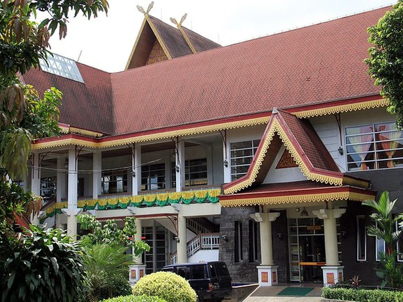
Taman Mini Indonesia Indah
Taman Mini Indonesia Indah is a culture park in East Jakarta opened in 1975, presenting full-scale traditional houses from Indonesia's provinces around a central lake. Museums, gardens, and cable-car routes interpret regional architecture and crafts.
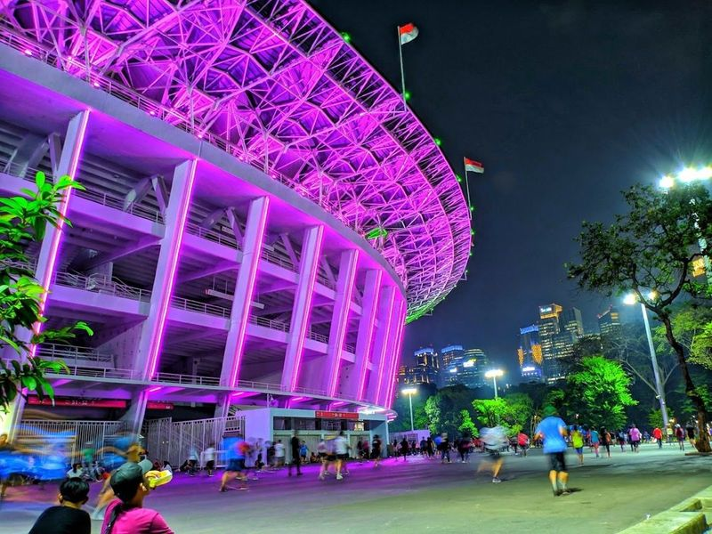
National Monument
The National Monument is a 132-metre obelisk in Merdeka Square, completed in 1975 and crowned with a gold-covered flame. It commemorates Indonesia's struggle for independence and houses a history museum at its base, with a lift to an observation deck above.
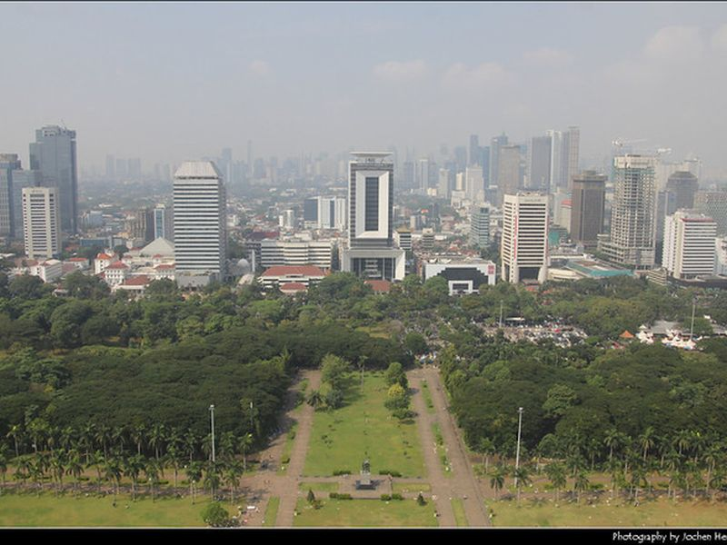
Monas Dancing Fountain
The Monas Dancing Fountain is a programmed water and light show at the base of the National Monument in Merdeka Square. Evening performances draw crowds to the reflecting pools and terraces around Monas, with timed jets and lighting set to music facing the obelisk.
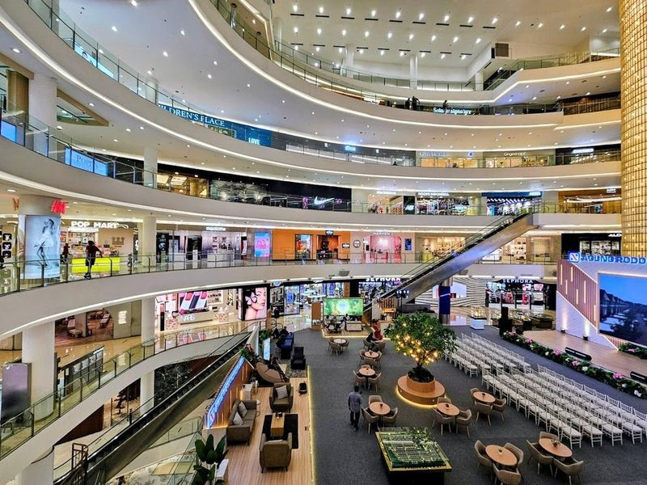
National Museum of Indonesia
The National Museum of Indonesia on Merdeka Square houses archaeological, ethnographic, and historical collections from across the archipelago. Founded in 1778, it is widely known as the Elephant Museum after the bronze statue at its entrance on the square's west side.
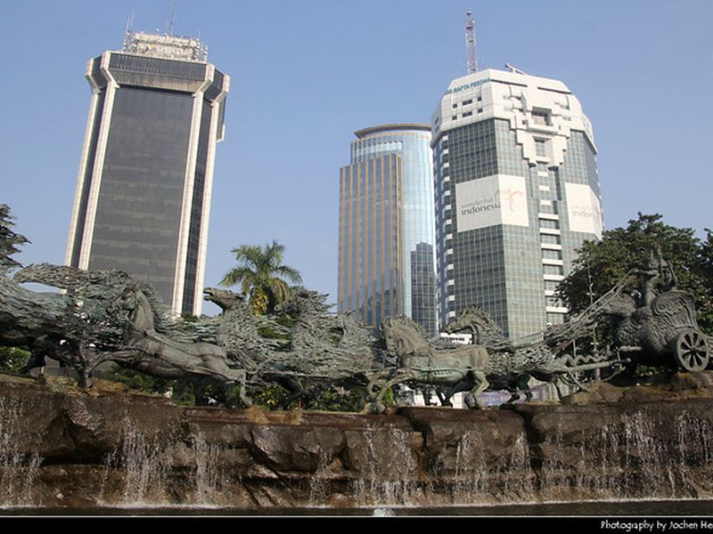
Arjuna Wijaya Statue
The Arjuna Wijaya Statue is a bronze equestrian group at the Selamat Datang traffic interchange in Central Jakarta, depicting the Mahabharata hero Arjuna. Installed near Merdeka Square and the Thamrin corridor, it marks a major junction between the commercial core and the historic Gambir civic district.
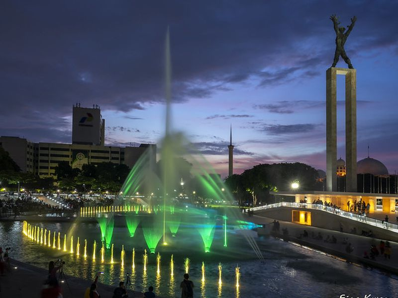
Lapangan Banteng
Lapangan Banteng is a historic square in the former Weltevreden district of Central Jakarta, laid out during the colonial period. The open space faces the Jakarta Cathedral and Istiqlal Mosque and is bordered by civic buildings, monuments, and government offices.
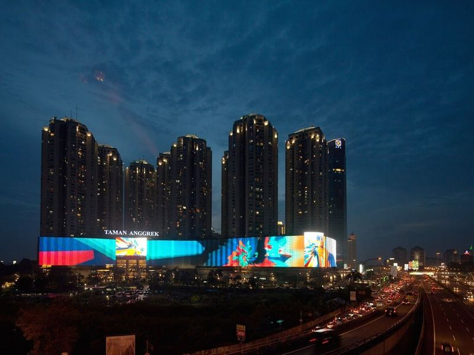
Jakarta Cathedral
Jakarta Cathedral is a neo-Gothic Roman Catholic cathedral consecrated in 1901 on the north side of Merdeka Square. It serves as the seat of the Archbishop of Jakarta and stands opposite Istiqlal Mosque, reflecting the city's paired religious landmarks.
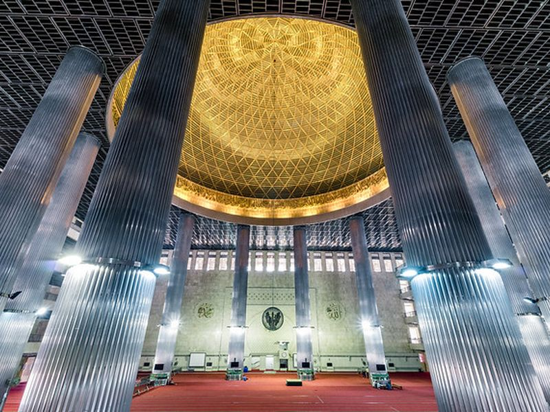
Istiqlal Mosque
Istiqlal Mosque is the largest mosque in Southeast Asia, opened in 1978 near Merdeka Square. Its modernist design by Frederich Silaban accommodates large Friday congregations and stands across from Jakarta Cathedral as a paired national religious landmark.
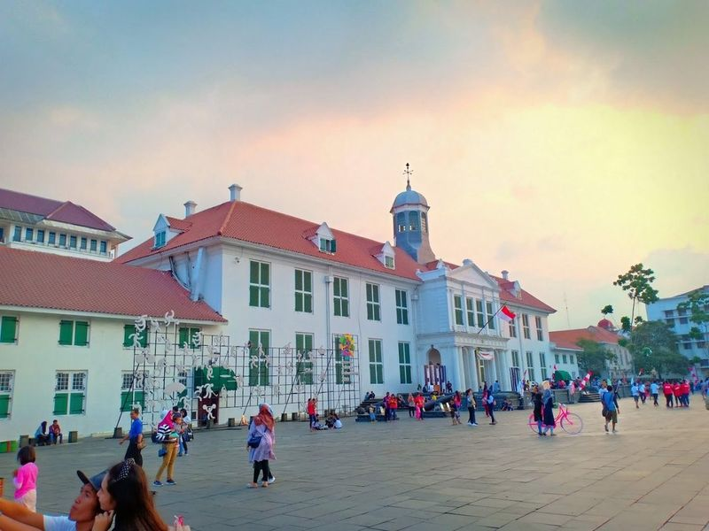
Tugu Tani
Tugu Tani, the Heroes Monument, is a bronze sculpture in Central Jakarta depicting a peasant fighter and his mother. Unveiled in the 1960s, it commemorates Indonesia's revolutionary struggle and marks a prominent junction near government offices east of Merdeka Square.
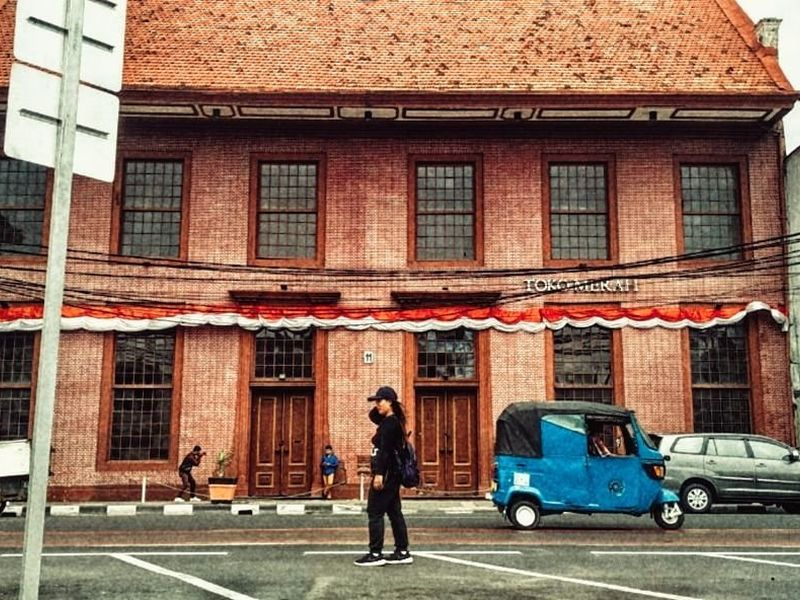
Taman Pandang Istana
Taman Pandang Istana is a public viewing park near the Merdeka Palace complex in Central Jakarta. Open lawns and planted borders face the ceremonial centre of Indonesia's executive administration west of Merdeka Square, offering a regulated vantage toward the palace grounds.
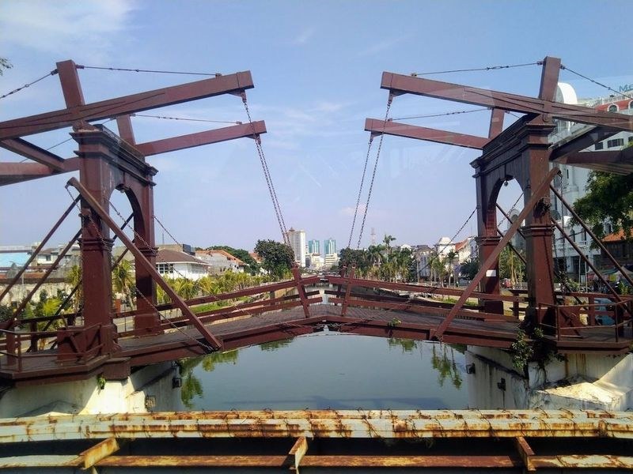
Taman Proklamator
Taman Proklamator is a memorial park in Central Jakarta marking the site linked to Indonesia's 1945 proclamation of independence. Paths and planted grounds surround commemorative elements near the Menteng area, connecting visitors with the city's founding narrative east of Merdeka Square.
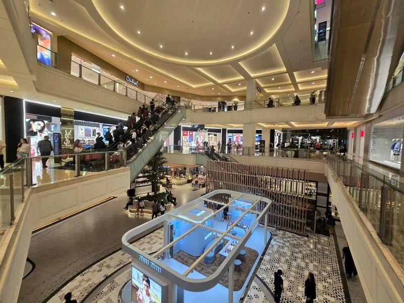
Dufan Ancol
Dufan Ancol is a major theme park within the Ancol Dreamland recreation zone on Jakarta Bay in North Jakarta. Opened in 1966 and expanded over subsequent decades, it combines roller coasters, themed zones, and waterfront access at the city's northern gateway beside the toll road from Kota Tua.
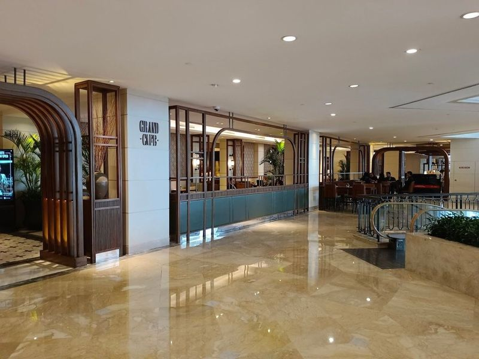
Selamat Datang Monument
The Selamat Datang Monument stands at the centre of the Hotel Indonesia Roundabout in Jakarta's Thamrin corridor. Created by Henk Ngantung and opened in 1962, its stylised figures greet visitors entering the modern commercial heart of the city along Jalan Thamrin.
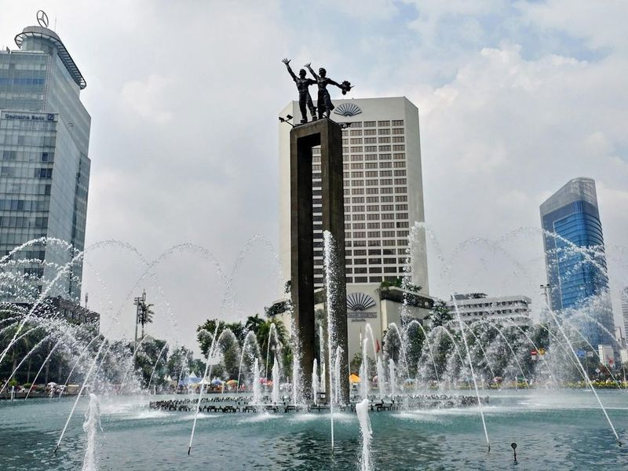
Grand Indonesia
Grand Indonesia is a major mixed-use complex on Jakarta's Thamrin Avenue, combining retail malls, hotels, and offices around a central atrium. Opened in stages from 2007, it anchors the skyline beside the Selamat Datang Monument, Hotel Indonesia, and the Thamrin corridor.
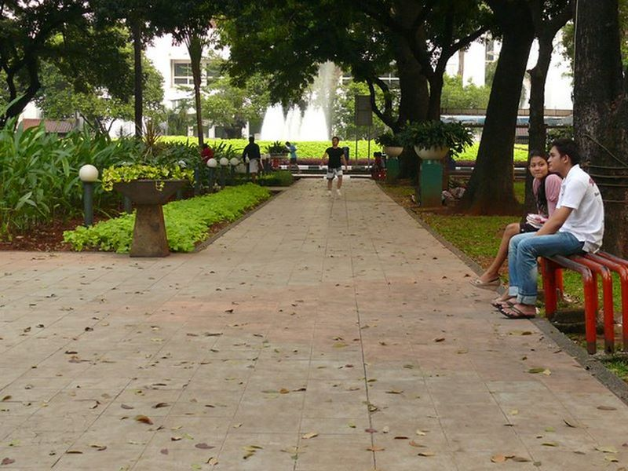
Taman Suropati
Taman Suropati is a tree-lined public park in Menteng, Central Jakarta, named for national hero Untung Suropati. Statues donated by foreign embassies line the shaded paths, and the park links the Menteng residential quarter with nearby diplomatic missions.
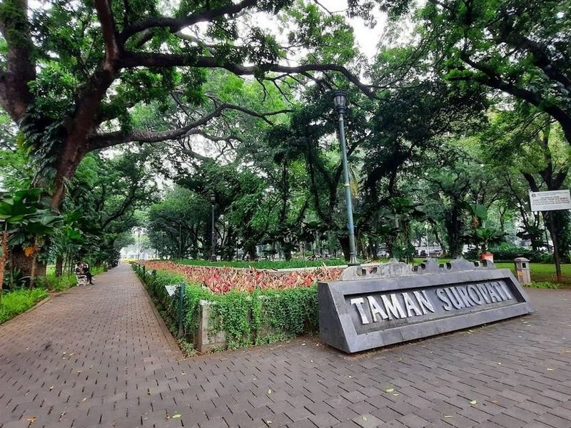
Situ Lembang Park
Situ Lembang Park surrounds a small reservoir in the Menteng district of Central Jakarta. Tree-lined paths and benches ring the water within the planned early-20th-century garden suburb, linking the Menteng residential blocks with diplomatic missions and nearby Suropati Park.

Taman Menteng
Taman Menteng is a public park in the Menteng district of Central Jakarta, part of the garden suburb planned in the early 20th century. Mature trees, playgrounds, and walking paths occupy land once reserved for the Dutch colonial elite south of Merdeka Square.
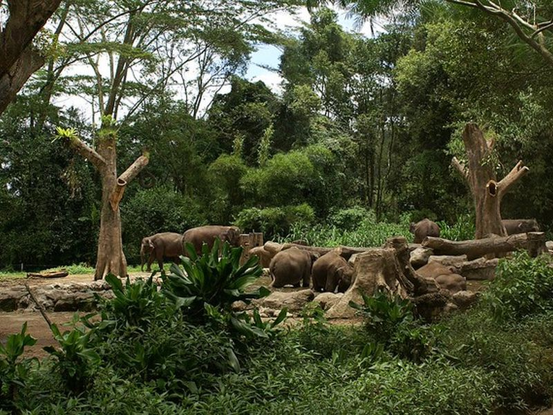
Jakarta AQuarium Safari
Jakarta Aquarium Safari is a large aquarium and wildlife exhibit in West Jakarta, combining marine tanks with themed zones and interactive displays. Opened in the 2010s in a retail complex west of the historic centre, it targets families with timed shows and walk-through habitats distinct from the city's colonial museums.
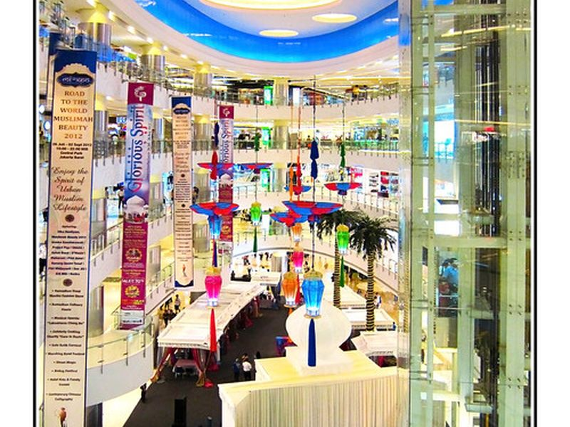
Central Park Mall
Central Park Mall is a large shopping centre in West Jakarta opened in 2009, combining retail floors with a central garden atrium and cinema complex. It forms a commercial hub in the Grogol district west of the historic city centre along the toll-road corridor.
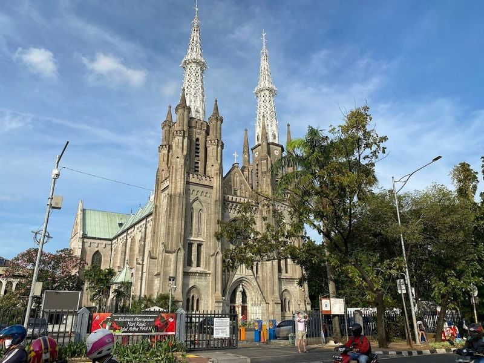
Tribeca Park
Tribeca Park is a small urban park beside the Tribeca retail complex in West Jakarta. Shaded paths and lawns provide open space in the Grogol district near Central Park Mall, offering a brief respite from the surrounding commercial towers along the western toll corridor.
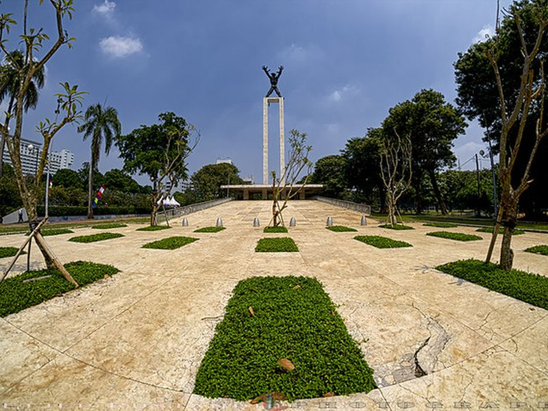
Taman Fatahillah
Taman Fatahillah is the cobbled main square of Kota Tua, framed by Dutch colonial buildings including the Jakarta History Museum and Wayang Museum. Named for the Sultan who seized Sunda Kelapa in the 16th century, it hosts markets and cultural events.
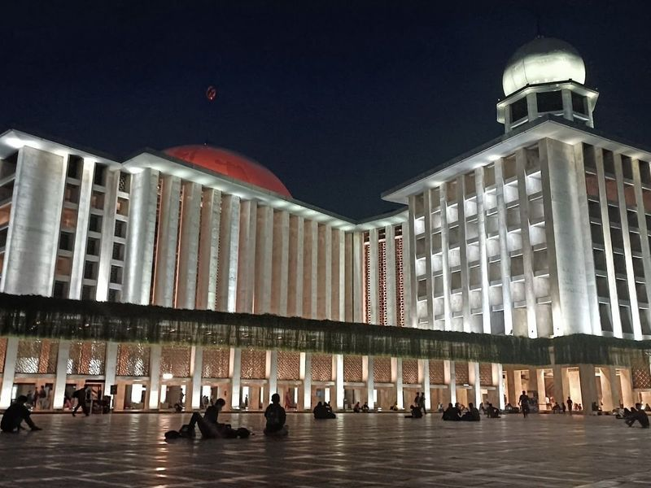
Jakarta History Museum
The Jakarta History Museum is housed in the former Stadhuis of Batavia on Fatahillah Square, built in 1710 as the Dutch East India Company town hall. Exhibits trace Jakarta's development from Sunda Kelapa through colonial Batavia to independence in 1945.
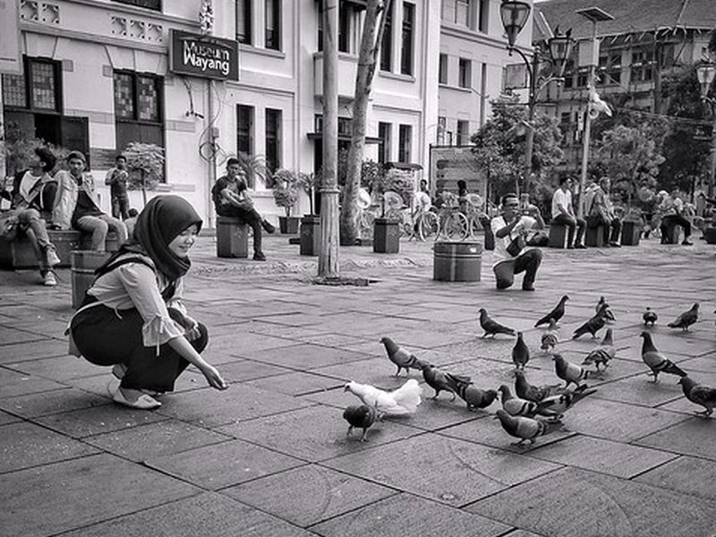
Wayang Museum
The Wayang Museum occupies a former Dutch church on Fatahillah Square in Kota Tua. Its collections display Javanese wayang kulit leather puppets, gamelan instruments, and related performing-arts material from across Indonesia in galleries around the old nave.
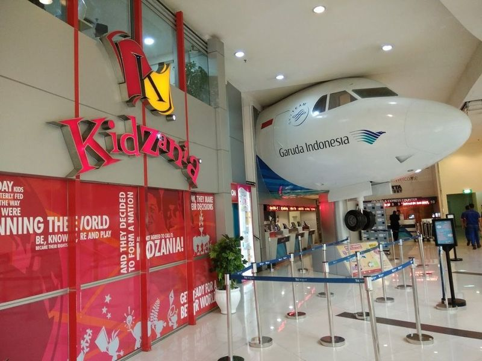
Toko Merah
Toko Merah is an 18th-century Dutch colonial townhouse on the Kali Besar canal in Kota Tua, named for its red brick facade. Once a merchant residence linked to the Vereenigde Oostindische Compagnie trade, it survives among warehouses and museums in the old harbour quarter.
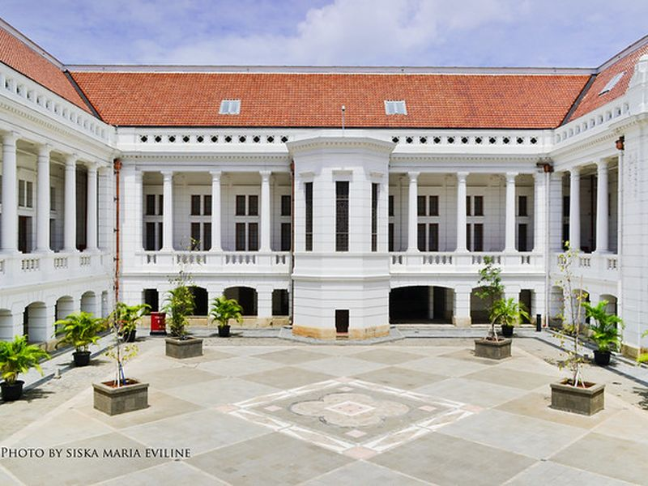
Museum Bank Indonesia
Museum Bank Indonesia occupies the former De Javasche Bank headquarters on Fatahillah Square in Kota Tua. Interactive galleries explain currency, banking, and trade in the Dutch East Indies and the modern Indonesian state for visitors in the restored banking halls.
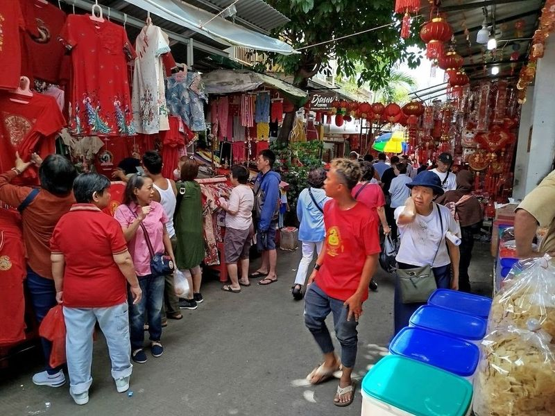
Jembatan Kota Intan
Jembatan Kota Intan is a historic drawbridge spanning the Kali Besar canal in Kota Tua, West Jakarta. The wooden span, restored for pedestrian use, recalls Batavia's harbour traffic and remains photographed colonial-era bridges in the old warehouse quarter beside Toko Merah and Fatahillah Square.
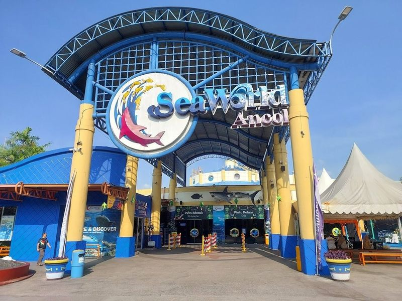
Tebet Eco Park
Tebet Eco Park is a revitalised green space in South Jakarta built around restored wetland and riverbank areas in the Tebet district. Boardwalks, native planting, and play areas replace former industrial margins, giving residents and visitors a structured nature walk south of the inner-city core.
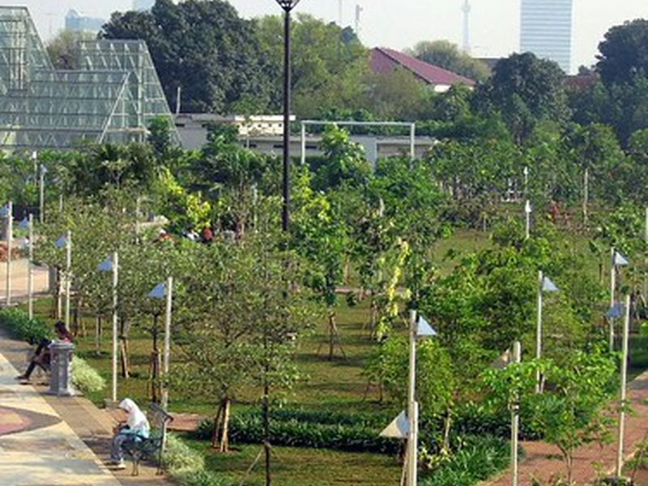
Mataram City Park
Mataram City Park is a neighbourhood park in the Blok K area of South Jakarta, laid out with lawns, paths, and play equipment for the surrounding residential blocks. It forms a local green anchor in a densely built district between the Kuningan office corridor and southern residential suburbs.
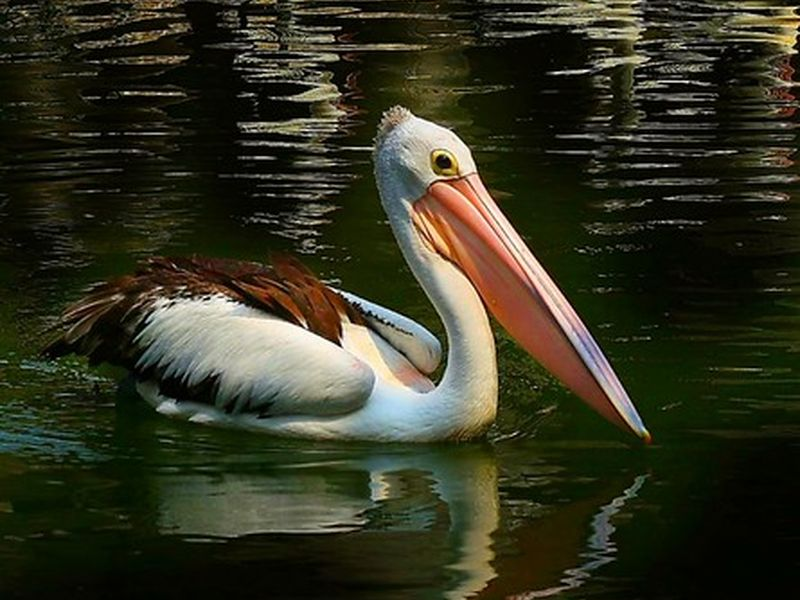
Ragunan Zoo
Ragunan Zoo is a 140-hectare zoological garden in South Jakarta, established in the 19th century and relocated to Ragunan in 1966. It is known for orangutan conservation exhibits and shaded grounds in the Pasar Minggu district south of the city centre.